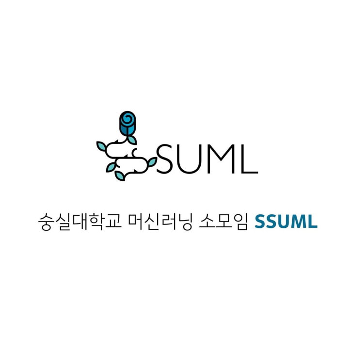
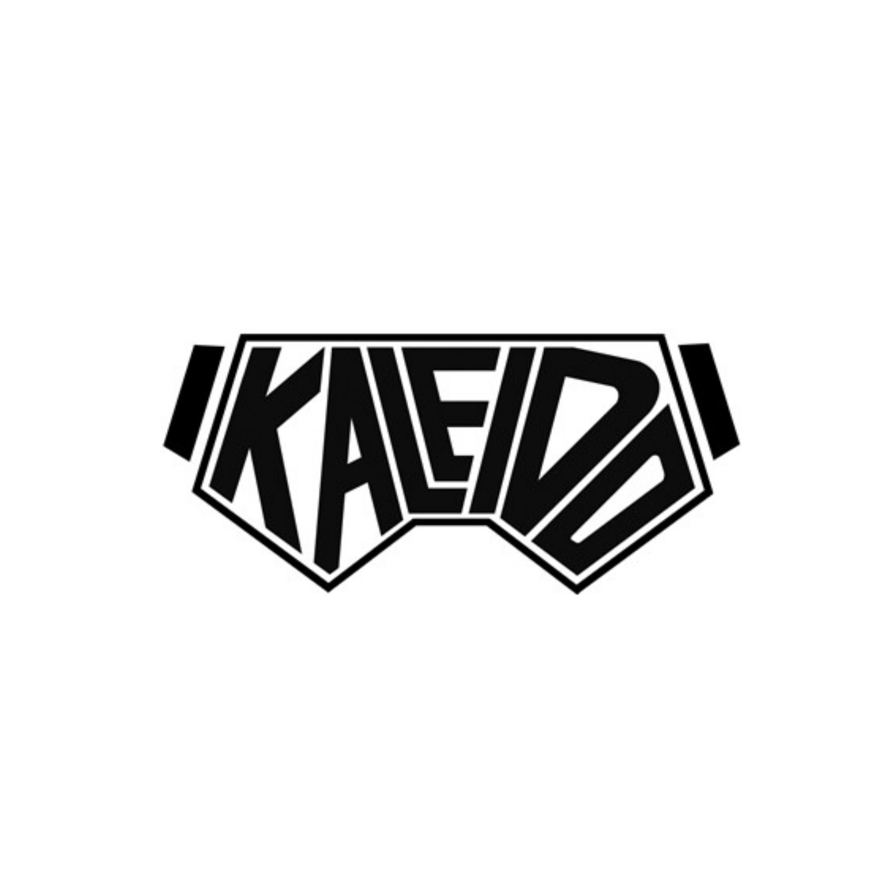

학부소모임

SSUML
머신러닝 소모임
IT 대학 소속 소모임이지만, IT대생 외에도 가입이 가능합니다! 재학생들과 숭실대학교 출신의 네이버/카카오 등 AI 분야 재직 혹은 인턴을 하셨던 재/졸업생과 함께 머신러닝/딥러닝 관련 개발, 세미나, 컨퍼런스, 스터디, 밋업을 진행합니다. 뿐만 아니라 타대학과 연합 세미나 등 다양한 학습 활동 역시 진행하고 있습니다.

kaleido
게임 & VR/AR 컨텐츠 개발 소모임
IT대학 학부생을 대상으로 하는 소모임으로 실력과 무관하게 모집하기 떄문에 신입생도 편하게 지원 가능한 소모임입니다.
팀프로젝트, 포트폴리오 제작, 자체 전시회 및 공모전 진행, 외부 행사 및 컨퍼런스 참여에 관심이 많은 학부생이라면 지원해보세요!